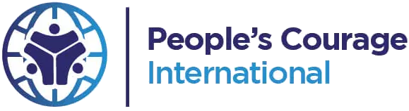
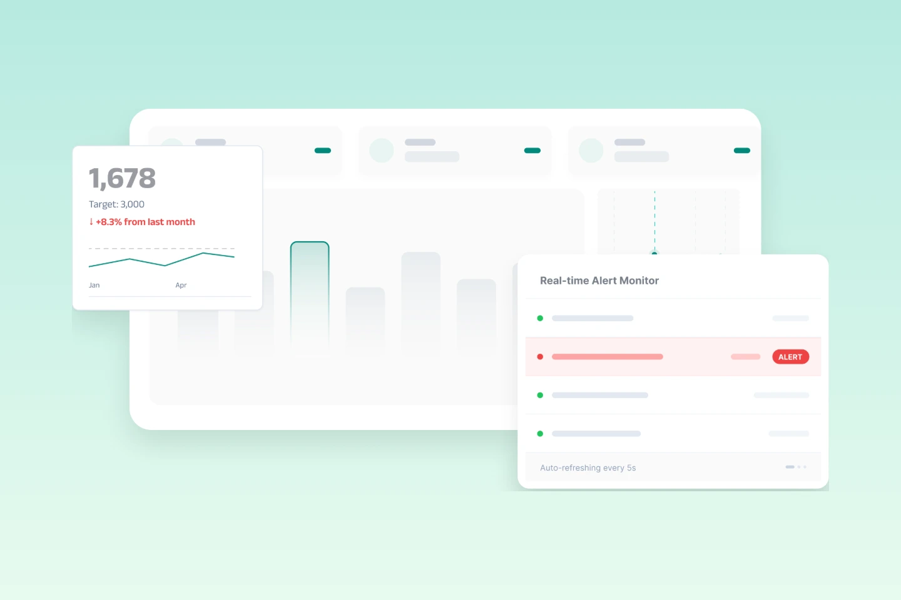
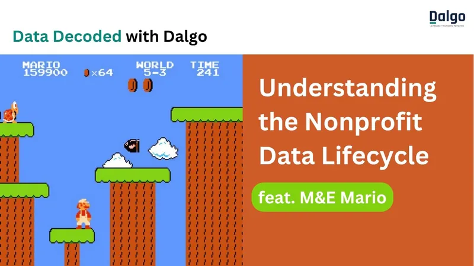
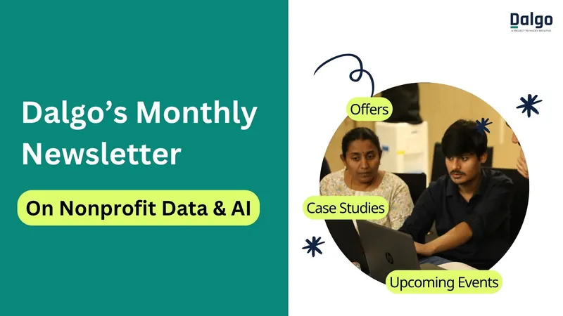

Consulting
Data Consulting
Design reporting systems, measurement frameworks, and data strategies with guidance from Dalgo's data experts.
Book a Free ConsultationBring scattered programme data into one trusted source your whole team can act on — for monthly reflections, funder reporting, and everyday decisions. Built by a nonprofit, for the social sector.
Need help planning your data systems? Apply for Pro Bono Consulting








How Dalgo Helps
Whether you're building your first reporting system or scaling an organization-wide data practice, Dalgo combines expert consulting with purpose-built technology to help your team consolidate, organize, and use data with confidence.
Consulting
Design reporting systems, measurement frameworks, and data strategies with guidance from Dalgo's data experts.
Book a Free Consultation
Platform
Bring spreadsheets, CRMs, surveys, and programme data into one trusted source of truth without replacing your existing tools.
Explore the Platform
Reporting
Create dashboards, automate donor reporting, and monitor programme performance using reliable, up-to-date data.
See ReportingReal teams. Real data challenges. Here is how nonprofits across sectors use Dalgo to move from cleaning data to making decisions.

Dalgo automated monthly reporting across six regions, letting the M&E team spend their time on the nuances of monitoring — interpreting data and building capacity.
Read the storyWhether you're already using Dalgo or simply looking to improve your organisation's data practices, our community offers practical resources, live learning, and peer support.

Practical, plain-language takes on nonprofit data — delivered to your LinkedIn feed every two weeks.
Subscribe
Live product sessions and nonprofit data education — learn alongside peers across the sector.
RegisterConnect with nonprofit data practitioners — ask questions, share wins, and swap what works.
Join Community
Product updates, practical guides, and stories from the NGO partners building with Dalgo.
SubscribeDalgo is an open-source data platform built for nonprofits and social-impact organisations. It brings data from the tools you already use into one place, cleans and structures it, keeps it up to date automatically, and turns it into dashboards, reports, alerts, and actionable insights.
Dalgo is for organisations that collect meaningful amounts of programme, beneficiary, operational, fundraising, or outcome data and want to use it more consistently. It is particularly useful for M&E, programme, operations, leadership, and data teams that need a reliable view across multiple tools, programmes, partners, or geographies.
You do not need a large in-house data engineering team. Dalgo is designed to work for organisations that want to build internal data capability, with support available for the technical work that needs it.
Dalgo helps solve common data challenges in the social sector:
The outcome is a more reliable single source of truth and more time for teams to review, learn, and act on data.
Dalgo combines a modern data stack with an understanding of how nonprofits work. It is open source, designed around social-impact use cases, and supported by a team that can help with data architecture, implementation, reporting, and adoption — going well beyond software access.
Rather than asking teams to replace everything they use, Dalgo helps them connect existing systems, create a dependable data foundation, and make insights accessible to the people who need them.